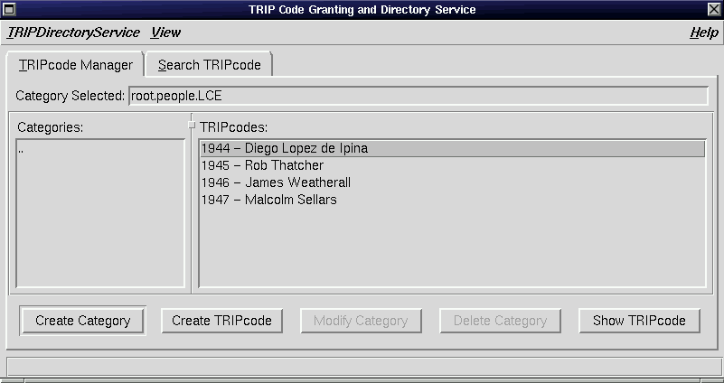
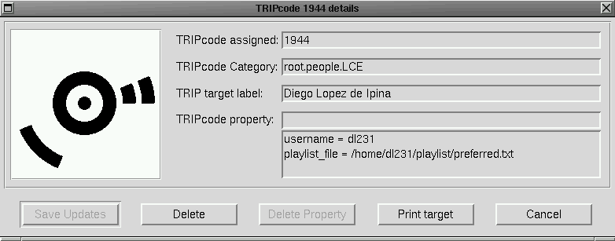
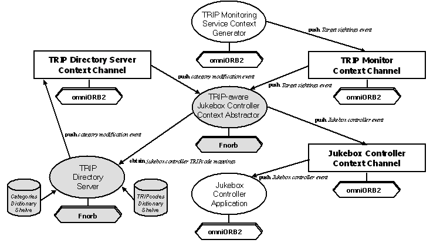

- The Categories Shelf contains category nodes hashed by
categoryKey. AcategoryKeyis a string with the format (xxx)+, where xxx is a three-digit ternary code in the range 000 to 212(9) and '+' denotes one or more of these sequences. Each category node is, at the same time, a dictionary by itself. Figure 4 shows the contents of this dictionary. ThecategoryIDkey maps to a category identifier string in the form root(.subCategoryName)*, where * stands for zero or more times. ThesubcategoriesandTRIPcodeskeys point to counters indicating the number of subcategories and TRIPcodes in a category, respectively.deleted_subcategoriesanddeleted_itemskeys hash to a list of deleted subcategories' keys and a list of deleted TRIPcodes, whose addresses can later be reused. - The TRIPcodes Shelf associates a
TRIPcode, the ternary representation of a number in the range 0 to 1594322 (213-1), to a Python mapped CORBA IDL structure containing as members a sequence of name/value pairs and alabel(see Figure 5). Note IDL structures are mapped into Python classes with a public attribute for each member of the structure.
Figure 4: Catetegories Dictionary Node

Figure 5: TRIPcodes Dictionary Node and its associated IDL structures
For each category up to 24 subcategories can be created (range of ternary codes 000 to 212). When a new subcategory is assigned, the identifier of the new category is formed by adding to the parent's categoryKey the following non-used ternary code string in the mentioned range. A TRIPcode is composed of a prefix with the key of its category, followed by the ternary string '22', and the remaining ternary digits up to 13, the design of TRIP targets address supports, with the representation of the TRIP target sequence number within its category.
4.2.2. TRIP Directory Server Functionality
Figure 6 lists some of the IDL interfaces provided by the TRIP Directory Server to enable clients to manipulate and query its contents. It also shows the event interfaces that permit clients to register as event consumers of the TRIP Directory Server Context Channel, where category modifications are notified. The OMG Event Service's implementation omniEvents, provided by AT&T's C++ ORB omniORB2 [Lo+99], was used to provide this server's asynchronous communication mechanism. On initialisation, the server obtains from the CORBA Naming Service (omniNames of omniORB2) an object reference to a registered Event Channel Factory object. It then invokes the method create_object in this factory to generate the TRIP Directory Server Context Channel and connects to it as a push event supplier. Figure 7 shows how this registration process is implemented in Python. It might prove a little difficult to understand without a thorough study of the OMG Event Service [OMG98b]. When the TRIP Directory Server's shelves are modified, a notification is pushed to the previously obtained channel indicating the type and attributes of the modification. Figure 8 shows the Python code for sending a TRIPcode creation notification (AddTRIPcodeEvent IDL structure in Figure 6). Once an event is received at the CC, this takes the responsibility of delivering it to all registered consumers.
module TRIPDirectoryService {
interface TRIPDirectoryServiceIF {
// Categories Dictionary manipulation interfaces
boolean createCategory(in string parentCategoryID, in string categoryName);
(...)
// TRIPcode Dictionary manipulation interfaces
string grantTRIPCode(in string categoryID);
void saveTRIPcode(in string TRIPcode, in TRIPcodeDetails data);
(...)
// Query interfaces for Categories Dictionary
stringList getSubCategoriesList(in string categoryID);
(...)
// Query interfaces for TRIPcodes Dictionary
TRIPcodeDetails getTRIPcodeDetails(in string TRIPcode);
(...)
// Event Interfaces
CosEventChannelAdmin::ProxyPushSupplier getPushEventSupplier();
CosEventChannelAdmin::ProxyPullSupplier getPullEventSupplier();
// Event structures:
struct AddTRIPcodeEvent {
string categoryID;
string TRIPcode;
TRIPcodeDetails details;
};
(...)
};
};
Figure 6: TRIP Directory Server IDL interfaces
# Get a reference to the initial naming service context
initialContext = orb.resolve_initial_references("NameService")
# Create name under which EventChannelFactory is bound with NamingService
name = [CosNaming.NameComponent('EventChannelFactory','EventChannelFactory')]
(...)
# Lookup the EventChannelFactory in the naming service
obj = initialContext.resolve(name)
# The Naming Service object references returned is downcasted to the proper type
eventChannelFactory = obj._narrow(CosLifeCycle.GenericFactory)
(...)
# Obtain an Event Channel instance from the EventChannelFactory
eventChannel = eventChannelFactory.create_object(...);
(...)
# Obtain a reference to the Event Channel's Factory of Proxy Push Consumers
supplierAdmin = self.eventChannel.for_suppliers()
(...)
# Create an instance of the Event Channel's proxyPushConsumer
self.consumer = supplierAdmin.obtain_push_consumer();
(...)
# The TRIP Directory Server connects itself as push Event Supplier
self.consumer.connect_push_supplier(self)
Figure 7: TRIP Directory Server registration to its Context Channel as Push Event Supplier
(...) typeCode = CORBA.typecode(CORBA.id(TRIPDirectoryService.AddTRIPcodeEvent)) data = TRIPDirectoryService.AddTRIPcodeEvent(categoryID, TRIPcode, detailsTRIPcode) self.consumer.push(CORBA.Any(typeCode, data)) (...)Figure 8:
AddTRIPcodeEvent transmission to Context Channel
5. A GUI-based front-end for the TRIP Directory Server
In order to provide a user-friendly way to manage the query, creation, deletion and manipulation of TRIPcodes and categories, and the TRIPtag generation, a GUI front-end client for the TRIP Directory Server has been created.
5.1. Reasons for Implementing in Python
Once again a decision had to be made regarding choice of programming language. We discarded C++ because we wanted a Directory Service front-end that would run on all of our platforms (Windows NT 4.0 and RedHat Linux 6.1) without having to recompile our code or use different GUI toolkit libraries. Java seemed to be a good candidate due to its multi-platform portability, CORBA support and excellent GUI toolkits (AWT or Swing). However, Python was chosen because it provides these same facilities and it has GUI toolkit libraries that are even easier to use than these of Java, requiring fewer code lines to achieve GUIs of similar sophistication. The main interest was to rapidly prototype this GUI-based client, without any special real-time execution performance requirements, making Python undoubtedly the best choice. Pmw [Telstra99], a toolkit for building high-level compound widgets in Python using the Tkinter module, was used because of its rich set of widgets and its multi-platform portability features.
5.2. Implementation Issues
The TRIP Directory Server GUI-based client (see Figure 9) is divided into two main interaction panes. The TRIPcode Manager Pane permits the user to: (1) browse through the existing TRIPcode categories displaying their subcategories and TRIPcodes, (2) create, modify and delete subcategories, and (3) create TRIPcodes within a category. On the other hand, the Search TRIPcode pane provides the means to (1) query the information associated with a given TRIPcode, (2), add, modify and delete its properties and (3) print a TRIPtag. Figure 9 shows the result of double clicking over a TRIPcode list item in the TRIPcode Manager Pane. Figure 10 illustrates in its first part the GUI callback method invoked when such action is performed and in the second the server implementation of the method getTRIPcodeDetails remotely called by the client.


Figure 9: Snapshots of the TRIP Directory Client
# Client-side
def showTRIPcode(self):
# Obtain the selected item from the TRIPcodes list
TRIPcodeSelected = self.TRIPcodeList.component('listbox').get(Tkinter.ACTIVE)
# Extract the TRIPcode identifier from the selected item string
index = string.find(TRIPcodeSelected,' ')
TRIPcode = TRIPcodeSelected[:index]
# Invoke a RPC in the TRIPDirectoryServer to obtain the details of the TRIPcode
TRIPcodeDetails = self.TRIPDirectoryServer.getTRIPcodeDetails(ternary(TRIPcode))
categoryID = self.categoryEntry.get()
# Create a modal dialog visualising the contents of the TRIPcode selected
TRIPcodeVisuDialog(TRIPcode, categoryID, TRIPcodeDetails)
# Server-side
def getTRIPcodeDetails(self, TRIPcode):
self.__lk.acquire() # Lock access to TRIPcodesShelve for the server thread executing this method
if self.TRIPcodesShelve.has_key(TRIPcode):
TRIPcodeDetails = self.TRIPcodesShelve[TRIPcode]
else:
TRIPcodeDetails = TRIPDirectoryService.TRIPcodeDetails('', [])
self.__lk.release()
Figure 10: TRIP Directory Client and Server method invocation after double click over TRIPcode list item.
6. Implementing a CA in Python
Context abstractor components aim to translate incoming raw sensor data (e.g. TRIP target 2345 spotted) into augmented contextual data directly usable for applications (e.g. play song event). The further layers of abstraction they provide insulate applications' logic from sensor data gathering and interpretation. The Python implementation of a TRIP-aware context abstractor for the Jukebox Controller application, described in section 1, illustrates the general procedure to be followed when implementing other components of this type. Its mission is to provide the virtual jukebox with context notifications that it can directly understand. To achieve this, it (1) filters out target sightings that do not correspond to the domain of the application and (2) interprets raw valid target sighting events generating the actual event types required to drive its operation.
Potentially the virtual jukebox could also be controlled by the signals generated from another context generator, e.g. an infrared remote control. A remote control context abstractor would gather the infrared-modulated code signals received by an infrared sensor CG, interpret them and push jukebox control events to a shared context channel with the TRIP-aware context abstractor. In this way, the final application would transparently respond to the control events received, regardless of their origin. Python is ideal for the implementation of these CAs because of its rapid prototyping capability and CORBA support. These components are usually not very computation-intensive, they just need to process and/or combine events obtained from CCs, producing as outcome enhanced sentient notifications.

Figure 11: TRIP-aware Python (grey) and C++ (white) SIF components and application
Figure 11 represents the flow of interaction among some SIF components and theJukebox Controller application. When the TRIP-aware Jukebox controller context abstractor is started, it obtains from omniORB2's Naming Service object references for the two heterogeneous CORBA components with which it will interact: the Python implemented TRIP Directory Server, over Fnorb ORB, and the C++ implemented TRIP Monitoring Service, over omniORB2. The obtained TRIP Directory Server reference is used to retrieve the details associated with the three TRIPcodes' categories of interest for the context abstractor:
- root.people.LCE: TRIPcodes associated with LCE lab members.
- root.object.music-tracks: TRIPcodes representing MP3 tracks to be played.
- root.action.jukebox: TRIPcodes depicting jukebox control operations (play, pause, etc.)
Next, the Jukebox abstractor has to register as push event consumer of both the TRIP Monitoring and TRIP Directory Servers' Context Channels. For this, the abstractor must:
- Implement the OMG Event Service
CosEventCom::PushConsumer[OMG98b] interface (see Figure 12).module CosEventComm { interface PushConsumer { void push (in any data) raises(Disconnected); void disconnect_push_consumer(); }; (...) };Figure 12: OMG Event ServicePushConsumerInterface.
- Invoke the method
getPushEventSupplierin both servers to obtain proxy push supplier object references of their context channels. - Connect to the proxy push event suppliers.
supplierTRIP = self.TRIPMonitorServer.getPushEventSupplier() supplierTRIP.connect_push_consumer(self) supplierDirectory = self.TRIPDirectoryServer.getPushEventSupplier() supplierDirectory.connect_push_consumer(self)Figure 13: Context Abstractor registration to Context Channels
Figure 13 shows stages 2 and 3's implementation. Note the TRIP-aware Jukebox Controller CA will receive event notifications from two different context channels through the same distributed callback interface (push.
Finally, the context abstractor looks up in the Naming Service for a registered Jukebox Controller Context Channel and, if one exists, obtains its object reference. (If one does not exist, then it creates a context channel instance from an Event Channel Factory, found through the Naming Service, and binds the obtained channel reference with the Naming Service). Either way, then, it registers as a push event supplier of this CC, using code similar to that in Figure 7. The IDL code of the events this CA conveys to its channel and the interfaces provided for clients to connect to it are shown in Figure 14. Whenever an event from the TRIP Monitoring Service or the TRIP Directory Service is received, the context abstractor's push method is invoked. Providing the notification originates at the TRIP Monitoring Service, and if it corresponds to a jukebox related TRIPcode, then after its processing, one of the jukebox control events of Figure 14 is pushed. Otherwise, the event received, coming from the TRIP Directory Server, is checked to determine whether the category modification has been done in any of the jukebox related categories, and if it is so, it updates its in-memory TRIPcode details. Figure 15 illustrates the push method's implementation.
module JukeboxAbstractor{
interface JukeboxAbstractorIF {
// Event interface:
CosEventChannelAdmin::ProxyPushSupplier getPushEventSupplier();
CosEventChannelAdmin::ProxyPullSupplier getPullEventSupplier();
// Event structures:
struct playlistEvent {
string playlistFilePath;
};
struct mpg3TrackEvent {
string songToPlay;
};
struct actionEvent {
string action;
};
(...)
};
};
Figure 14: Event interfaces for Jukebox Context Abstractor.
def push(self, event):
eventType = event.typecode().name()
eventData = event.value()
if eventType == "TRIPevent":
# Process the events received from TRIP Monitor Context Channel
if string.find(eventData.TRIPcode, self.lceCategPrefix) == 0:
# TRIPcode represents a member of LCE
propertiesList = self.people[eventData.TRIPcode].propertiesList
index = 0
while (propertiesList[index].propertyName != "playlist_file") and
(index < len(propertiesList)):
index = index + 1
if index != len(propertiesList):
# Push an event of type playlist to the Event Channel
typeCode = CORBA.typecode(CORBA.id(JukeboxAbstractor.playlistEvent))
data = JukeboxAbstractor.playlistEvent(propertiesList[index].propertyValue)
self.consumer.push(CORBA.Any(typeCode, data))
elif string.find(eventData.code, self.trackCategPrefix) == 0:
# TRIPcode represents an MP3 song track
(...)
elif string.find(eventData.code, self.jukeboxActionCategPrefix) == 0:
# TRIPcode represents an jukebox action
(...)
else: # Filter out the event
pass
# Process the events received from TRIP Directory Server Context Channel
elif eventType == "AddTRIPcodeEvent":
# Determine category in which new TRIPcode was added
if eventData.categoryID == "root.people.LCE":
# Update people dictionary with the new TRIPcode of a person
self.people[eventData.TRIPcode] = eventData.details
elif eventData.categoryID == "root.action.jukebox":
# Update jukebox operations dictionary
(...)
elif eventData.categoryID == "root.object.music-tracks":
# Update MP3 tracks dictionary
(...)
else: # Ignore modification in categories of no interest
pass
elif eventType == "DeleteTRIPcodeEvent":
(...)
Figure 15: Jukebox Controller Context Abstractor push method implementation7. Conclusion
This work has shown the ample range of capabilities offered by the integration of Python and CORBA, demonstrating Python's space in the development of CORBA distributed software components. Python has served us to develop a full-fledged Directory Service for our novel sensor technology that if implemented with a system-level programming language, such as C++ or Java, would have required a much longer development time than the three programmer-weeks it took. Python has also assisted us in the rapid development of context abstractor type components that enabled us to experiment with, and show the potential of our sensor technology (TRIP) and the SIF architecture. The Jukebox Controller application has been successfully re-coded and integrated with SIF.
Further context abstractors and applications will be developed in Python, to explore new application domains for TRIP. For example, a planned context abstractor will store TRIPtag sightings indexed by location and timestamp to permit context-based retrieval applications. In addition, new context generators will be created to combine TRIP's sentient data with inputs from other sensors. This process will lead to the generation of a catalogue of reusable and extensible SIF components. The CORBA Trader Service [OMG98b], which defines a yellow pages service classifying CORBA object references by object properties, will be useful in its creation.
This work reveals that Python's known extensibility and gluing capabilities with higher performance languages, such as C, C++ or Java, can be further increased thanks to integration with CORBA and the usage of its event notification services. The case study described in Section 6 illustrates how OMG Event Channels can be used as glue for heterogeneous distributed software components.
The SIF architecture requires several improvements, the most critical one being the replacement of the Event Service by the Notification Service [OMG98c]. This modification will release context abstractors from the event-filtering stage and reduce event transmission bandwidth. Event consumers will specify at their registration the conditions or constraints the events they wish to receive must satisfy, and the Notification Channels will carry out the filtering process for them.
Never has the development of CORBA distributed applications been such a simple and fast process as it is with Python. Very little CORBA literacy is required from the programmer to produce working distributed applications. Memory management is done automatically by Python and, due to its dynamic properties, inconvenient long CORBA variable name declarations are eliminated. The Python programming community has much to gain from the existing CORBA Python mapping implementations, providing they become a little more robust and faster. The newly appeared omniORB2's CORBA Python binding (omniORBpy) promises much on this aspect. Its performance and robustness will be explored in future work. Although, due to Python's performance constraints, mostly client-side CORBA systems will be developed in this language, still they can benefit much from both the ample set of existing standard CORBA services and Python's excellent standard library for the development of sophisticated distributed systems.
Acknowledgements
The author is very grateful to Sai-Lai Lo for his expert advice and help on the TRIP project and to Frank Stajano for introducing him to Python and encouraging him to write this paper. He would also like to thank AT&T for the industrial sponsorship of the TRIP project and to the Basque Government Education Department for the financial support to his PhD studies.
References
- [Chilvers99]
- Chilvers, M., "Fnorb – Version 1.0", Distributed Systems Technology Centre, University of Queensland, Brisbane, Australia, April 1999, http://www.dstc.edu.au/Products/Fnorb/user-guide.html
- [Dey+99]
- Dey A.K., Salber D., Futakawa M. and Abowd G. "An architecture to support context-aware applications", 12th Annual ACM Symposium on User Interface Software and Technology (UIST '99), 1999.
- [GNU99]
- "GNU Gdbm Database Library", 1999, http://www.polaris.net/docs/gdbm/
- [Harter+99]
- Harter A., Hopper A, Steggles P., Ward A. and Webster P. "The Anatomy of a Context-Aware Application", Proceedings of MOBICOM'99, Seattle, August 1999.
- [Ipina99]
- Lopez de Ipina D., "TRIP: A Distributed vision-based Sensor System", PhD 1st Year Report, August 1999, http://www-lce.eng.cam.ac.uk/~dl231/trip/docs/report.pdf.gz
- [Janssen+99]
-
Janssen B., Spreitzer
M.,Larner D.and Jacobi C. "ILU 2.0alpha14 Reference Manual", Xerox Corporation, 1999, ftp://ftp.parc.xerox.com/pub/ilu/ilu.html - [JNDI99]
- "Java Naming and Directory Interface (JNDI)" Home Page, 1999, http://java.sun.com/products/jndi/docs.html
- [Lo+99]
- Lo. S, Riddoch D, "The omniORB2 version 2.8 User's Guide ", AT&T Labs Cambridge, UK, February 1999, http://www.uk.research.att.com/omniORB/doc/omniORB2/omniORB2.html
- [OMG98a]
- OMG, Object Management Group, "CORBA/IIOP 2.2 Specification", February 1998, ftp://ftp.omg.org/pub/docs/formal/98-07-01.pdf
- [OMG98b]
- OMG, Object Management Group, "CORBA Services: Common Object Services Specification", September 1998, ftp://ftp.omg.org/pub/docs/formal/98-12-09.pdf
- [OMG98c]
- OMG, Object Management Group, "Notification Service – Joint Revised Submission", November 1998, ftp://ftp.omg.org/pub/docs/telecom/98-11-01.pdf
- [Pascoe99]
- Pascoe J. "The Context Information Service", April 1999, "http://www.cs.ukc.ac.uk/people/staff/jp/cis/index.html
- [Schilit+94]
- Schilit B., Adams N., and Want R. "Context-Aware Computing Applications ", Proceedings of the Workshop on Mobile Computing Systems and Applications, Santa Cruz, CAIEEE Computer Society, December 1994.
- [Smith+97]
- Smith, D., Vinoski, S., "Overcoming Drawbacks in the OMG Event Service", SIGS C++ Report magazine, June 1997
- [Telstra99]
- Telstra Corporation Limited, Australia , "Pmw Python megawidgets", June 1999, http://www.dscpl.com.au/pmw/
- [Want+92]
- Want R., Hopper A., Falcão A. and Gibbons J. "The Active Badge Location System", ACM Transactions on Information Systems, Vol. 10, No. 1. 91-102, January 1992
- [Ward+97]
- Ward A., Jones A. and Hopper A. "A New Location Technique for the Active Office", IEEE Personal Communications, October 1997, pp. 42-47
- [Werb+98]
- Werb J. and Lanzl C."Designing a positioning system for finding things and people indoors", IEEE Spectrum, September 1998, pp.71-78.
Footnotes
(1) TRIP has been developed in collaboration with AT&T Laboratories, Cambridge
(2) The current implementation only provides containment-based location i.e. it identifies the camera view range within which the TRIP target is sighted. Currently, the author is working on the improvement of the location resolution using stereo vision techniques.
(3) Note 313 = 1,594,323 ~= 220 valid codes
(4) IDL is a descriptive language that supports C++ syntax for constant, type, and operation declarations and lets one specify components' boundaries and their interfaces with potential clients.
(5)
The Any type is a CORBA IDL built-in type that can represent any possible IDL data type, whether it is built-in or user-defined.
(6) These two interfaces must be provided by every SIS component that communicates contextual events to a Context Channel.
(7) shelve mechanism's performance is very acceptable when the C implemented version of pickle, cPickle, is used.
(8) Internet Inter-ORB protocol that allows the communication between different vendors ORBs, such as in our case when we communicate between omniORB2 and Fnorb ORBs.
(9) Note the codes 220, 221 and 222 are reserved because the prefix '22' denotes the beginning of a valid TRIPcode.